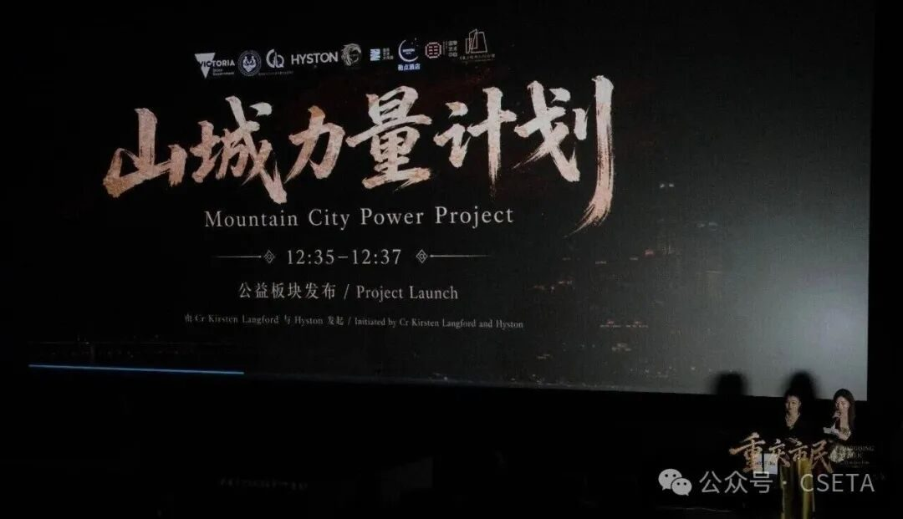
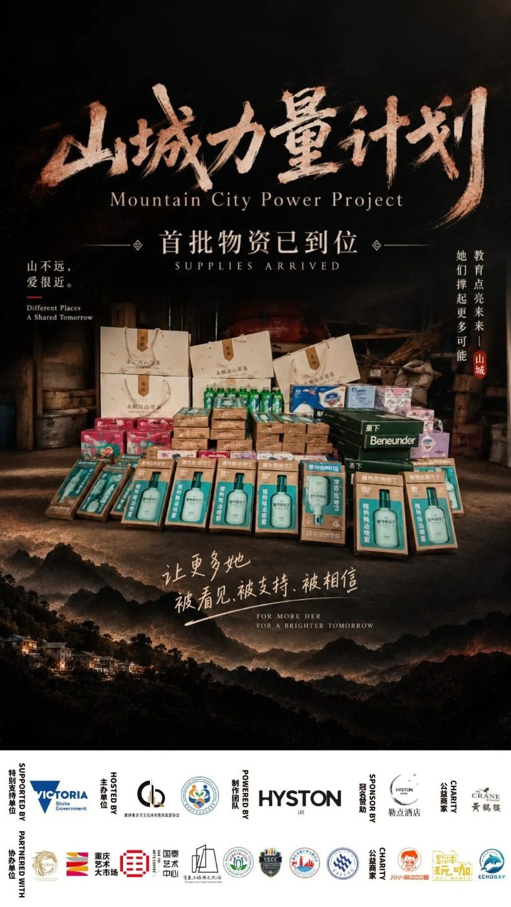
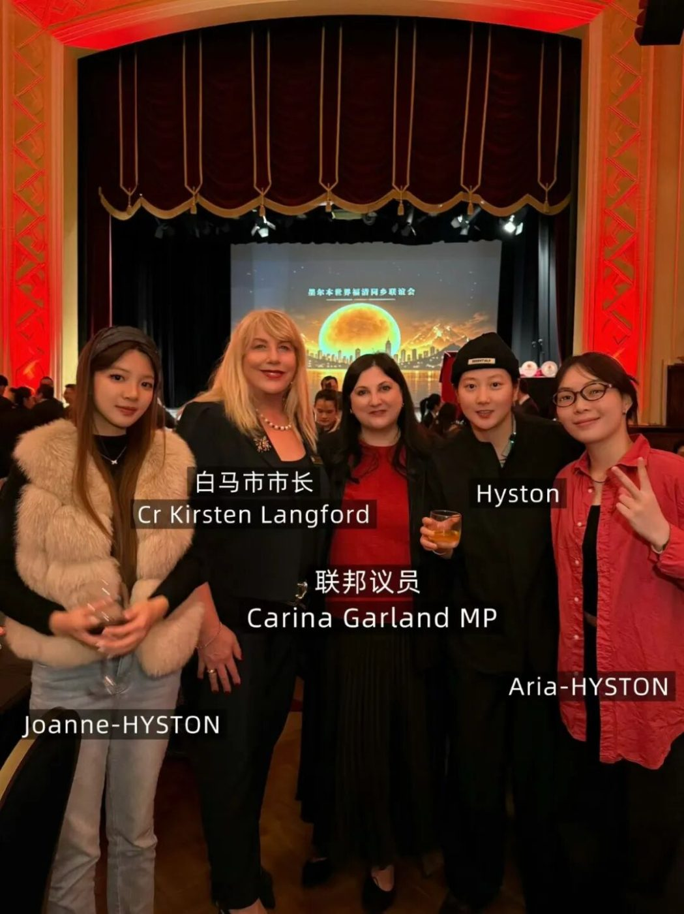
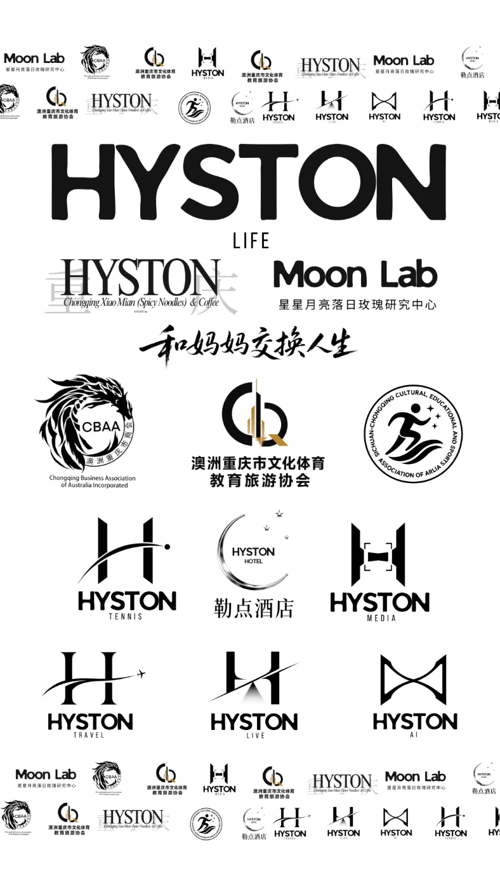

从《重庆市民》到维州创新展｜白马市市长 Cr Kirsten Langford 第五次与HYSTON团队共创内容
从《重庆市民》到维州创新展｜白马市市长 Cr Kirsten Langford 第五次与HYSTON团队共创内容
从城市音乐、公益计划到社区活动，协会与 Whitehorse 地方政府的连接持续深化
【墨尔本讯】10月5日，白马市（City of Whitehorse）市长 Cr Kirsten Langford 在其个人 Instagram 账号，以合作帖形式与黄欣悦会长个人账户以及公司账户HYSTON Official 共同发布了她的主题演讲视频，并同步分享至 Facebook。这是 Langford 市长第五次邀请协会团队共同发布内容。
一、最新一次共创：创新展主题演讲
10月4日，创新展在墨尔本 Box Hill 市政厅举行。在发表主题演讲前，Langford 市长主动与协会团队沟通，商请协会合作团队 HYSTON 记录演讲全程，并于会后制作为社交媒体视频。视频经多轮字幕与细节核对后完成。
Langford 市长在帖文中表示，很荣幸在 Box Hill 市政厅发表主题演讲。她没有泛谈人工智能与科技的未来，而是从个人视角讲述中澳两国过去50年奠定的合作基础，以及两国如何在科技发展的新"黄金时代"携手同行。她在帖文中特别感谢 HYSTON 对演讲的拍摄。
当天，Langford 市长还向黄欣悦会长引荐了曼宁汉姆市（City of Manningham）副市长 Cr Deirdre Diamante，各方就技术应用、社区发展与创新进行了交流。
二、合作的起点：《重庆市民》与"山城力量计划"
双方的官方合作始于今年6月。重庆市民
2026年6月18日，由澳洲重庆市文化体育教育旅游协会主办、HYSTON 制作的《重庆市民》（Chongqing Citizen）城市音乐 Live Film 首映暨重庆直辖二十九周年庆祝活动在墨尔本举行。Langford 市长专程出席并发表致辞。
她在致辞中高度肯定了这次活动，认为《重庆市民》通过音乐、电影、影像与现场表演，把重庆的城市故事带到墨尔本，展现了艺术与文化在促进跨地域理解、连接不同社区方面的力量。她表示，白马市是一个充满活力且多元的社区，许多居民与中国文化有着深厚联系，这样的文化交流既丰富了当地的多元文化生活，也加深了不同社区之间的理解与联系。

Langford 市长还与黄欣悦会长共同启动了"山城力量计划"（Mountain City Power Initiative）。这是一项公益项目，首阶段聚焦重庆山区学校的女性教育工作者，通过品牌直寄、物资认捐与社区资源连接，提供女性用品、教学物资与生活支持，建立真实、可持续、可追踪的支持路径。活动现场以重庆艺术作品为媒介进行"公益物资接力"，嘉宾以认捐等值物资的方式参与，让艺术价值转化为能够抵达山区学校的具体支持。

Langford 市长特别指出，"山城力量计划"体现了文化交流之外更深层的公共意义：它不仅连接城市与城市，也通过具体行动回应社区需求，展现了艺术、文化与公益结合所能产生的积极影响。

三、持续的互动：从社区文化到地方议员网络
《重庆市民》之后，从社区文化到 AI 与城市未来协会与 Langford 市长之间的交流并没有停留在一次活动。
8月，连接进入社区文化现场。
Langford 市长应 HYSTON 邀请出席古风市集活动。月底，她再次邀请协会及 HYSTON 团队共同发布相关活动视频。HYSTON 团队成员 Daisy 负责现场内容执行，黄欣悦则以远程方式参与内容呈现。
这次合作延续了双方从《重庆市民》开始建立的文化连接，也让互动进一步进入更日常、更具社区属性的公共活动场景。
9月，双方的交流开始从文化与社区进一步延伸至人工智能与创意产业。
在一次VFL现场交流中，Langford 市长主动问起 HYSTON 近期的 AI 业务，并提到自己已在社交媒体上关注到团队发布的一系列 AI 产品与创意内容。双方随后围绕 AI 内容生产、AI 广告，以及生成式人工智能如何进入品牌传播、城市传播和公共文化项目展开交流。双方的互动也由此前的文化与社区合作，进一步延伸至新技术与创意产业。
以体育为桥｜从VFL总决赛走进澳大利亚社区体育与城市连接
同月，双方的公共事务连接也进一步扩大。
在墨尔本世界福清联谊会第十三届就职典礼暨中秋晚会上，Langford 市长会后发布的活动内容中使用了与协会团队的合影，并再次邀请黄欣悦、HYSTON 官方账号及团队成员共同发布。

当晚，她还向协会团队引荐了联邦众议员 Carina Garland MP，并主动安排咖啡会面，帮助协会结识更多地方议员。
10月，双方第五次内容共创发生在维州创新展。
Langford 市长在主题演讲前主动请 HYSTON 完整记录并制作演讲视频，随后又以合作帖形式与黄欣悦及 HYSTON 官方账号共同发布，并公开感谢团队的拍摄与制作。
与此同时，包括 Whitehorse City Council 议员 Cr Daniel Griffiths 在内的更多当地公共事务人士，也开始关注协会团队及相关内容。
从文化，到社区。
从社区，到 AI 与创意产业。
再从一次次具体交流，进入更广泛的地方政府与公共事务网络。
双方之间的连接，并不是突然形成的。
它更像是在一件件具体的小事中，慢慢长出来的。
四、协会的思考：交流始于具体的合作
从6月的一场城市音乐首映，到10月的一段演讲视频，协会与 Langford 市长的五次共创，几乎都起于具体的事情：一次致辞、一个公益计划、一场社区活动、一次现场记录。
对CSETA而言，这类连接的价值不在于某一张合影或某一段视频，而在于信任在一次次具体合作中逐步建立。重庆的城市故事，也由此通过地方政府和社区网络，被更多原本不了解重庆的澳大利亚人听见。
未来，协会将继续推进"山城力量计划"，并通过内容传播、公共活动、城市交流与跨文化项目，与更多澳大利亚地方政府、社区组织、企业及文化机构建立长期联系，让川渝与澳大利亚的交流走进真实的人与社区之中。
澳洲重庆市文化体育教育旅游协会秘书处
10月6日
FromChongqing Citizento the Victoria Innovation Expo | Mayor Cr Kirsten Langford Collaborates with the HYSTON Team for the Fifth Time
From city music and community initiatives to AI, local engagement and public affairs, the Association’s connection with the City of Whitehorse continues to deepen
MELBOURNE, 5 October 2026— Mayor of the City of Whitehorse, Cr Kirsten Langford, published a collaborative Instagram post with Association President Hyston Huang and HYSTON Official, featuring the video of her keynote address. The post was also shared to Facebook.
This marks the fifth content collaboration between Mayor Langford and the Association and HYSTON team since June.
1. The latest collaboration: a keynote at the Victoria Innovation Expo
On 4 October, the Victoria Innovation Expo was held at Box Hill Town Hall in Melbourne.
Before delivering her keynote address, Mayor Langford approached the Association team and asked HYSTON to record the speech in full and later produce it as a social-media video. The final version was completed after several rounds of subtitle and detail checks.
In her post, Mayor Langford said it was an honour to speak at Box Hill Town Hall. Rather than focusing broadly on predictions about AI and technology, she reflected on her own experience and the foundations built over the past 50 years, as well as the opportunities for Australia and China to work together in what she described as a new “Golden Age” of technology.
She also specifically thanked HYSTON for filming the speech.
During the event, Mayor Langford also introduced President Hyston Huang to Cr Deirdre Diamante, Deputy Mayor of the City of Manningham. Their conversation touched on technology, community development and innovation.
2. Where the collaboration began:Chongqing Citizenand the Mountain City Power Initiative
The formal collaboration between the two sides began in June.
**Chongqing Citizen**
On 18 June 2026, the premiere ofChongqing Citizen, a city music Live Film produced by HYSTON and presented by the Association, was held in Melbourne alongside celebrations marking the 29th anniversary of Chongqing becoming a municipality directly under China’s central government.
Mayor Langford attended the event and delivered remarks.
In her speech, she spoke positively about the wayChongqing Citizenbrought the story of Chongqing to Melbourne through music, film, visual storytelling and live performance. She also highlighted the role of arts and culture in building understanding across regions and connecting different communities.
Mayor Langford noted that Whitehorse is a vibrant and highly diverse municipality, with many residents maintaining strong connections to Chinese culture. Cultural exchange of this kind, she said, contributes not only to multicultural life but also to greater understanding between communities.
Mayor Langford and President Hyston Huang also jointly launched theMountain City Power Initiative.
The community initiative initially focuses on female educators working in schools in mountainous areas of Chongqing. Through direct brand donations, in-kind contributions and community resource partnerships, the project provides women’s essentials, educational supplies and everyday necessities, with the aim of building a practical, sustainable and traceable support pathway.
At the launch, artworks connected to Chongqing were used as part of an “in-kind support relay”, allowing guests to pledge goods of equivalent value and transform cultural and artistic participation into tangible support for schools and educators.
Mayor Langford also highlighted the broader public value of the Mountain City Power Initiative: beyond connecting cities and cultures, the project responds to real community needs and demonstrates what can emerge when art, culture and public-interest action come together.
3. Continued engagement: from community culture to AI and local public networks
The relationship between the Association and Mayor Langford did not end withChongqing Citizen.
August: moving further into community culture
Mayor Langford attended a traditional Chinese culture market at HYSTON’s invitation.
Later that month, she again invited the Association and HYSTON team to collaborate on an event video. HYSTON team member Daisy led the on-site content work, while Hyston Huang participated remotely in the production.
The collaboration extended the cultural connection established throughChongqing Citizenand brought the relationship into a more informal, community-based public setting.
September: from culture and community to AI and the creative industries
During a conversation at a VFL event, Mayor Langford proactively asked President Hyston Huang about HYSTON’s recent AI work and mentioned that she had already seen a number of HYSTON’s newly released AI products and creative projects on social media.
The discussion then moved into AI content production, AI advertising, and the ways generative AI can be applied to brand communication, city storytelling and public cultural projects.
The conversation marked another shift in the relationship, extending it from culture and community into emerging technology and the creative industries.
**Sport as a Bridge | From the VFL Grand Final to Community Sport and Urban Connection in Australia**
The same month: broader public-affairs connections
At the 13th inauguration ceremony and Mid-Autumn Festival celebration of the World Fuqing Association Melbourne event at Box Hill Town Hall, Mayor Langford later shared event photos that included members of the Association team, and again invited Hyston Huang, HYSTON Official and team members to collaborate on the post.
That evening, Mayor Langford also introduced the Association team to Federal MP Carina Garland and helped create opportunities for further meetings and connections with local representatives.
October: the fifth content collaboration at the Victoria Innovation Expo
At the Victoria Innovation Expo, Mayor Langford asked HYSTON to record and produce her keynote speech before she took the stage.
The final video was subsequently published as a collaborative post with Hyston Huang and HYSTON Official, with Mayor Langford publicly acknowledging the team’s filming and production work.
At the same time, other local public figures, including City of Whitehorse Councillor Cr Daniel Griffiths, have begun engaging with and following content from the Association and HYSTON team.
From culture to community.
From community to AI and the creative industries.
And from individual conversations into a broader local government and public-affairs network.
The connection did not emerge all at once.
It has grown gradually through a series of specific, practical interactions.
4. The Association’s perspective: meaningful connections begin with real collaboration
From a city music premiere in June to a keynote video in October, the five collaborations between the Association, HYSTON and Mayor Langford have all begun with something concrete: a speech, a public-interest initiative, a community activity, a conversation or a moment that needed to be documented.
For the Australia Sichuan–Chongqing Culture, Education and Sports Association, the value of these connections is not found in a single photograph or a single video.
It lies in the trust that develops through repeated, practical collaboration.
Through this process, stories of Chongqing are also reaching Australians who may previously have had little connection with the city, carried through local government, community and public networks.
Looking ahead, the Association will continue to advance theMountain City Power Initiative, while developing longer-term relationships with Australian local governments, community organisations, businesses and cultural institutions through content, public events, city exchange and cross-cultural projects.
The aim is to ensure that connections between Sichuan–Chongqing and Australia do not remain confined to formal events or official occasions, but continue to enter real communities and everyday human relationships.
